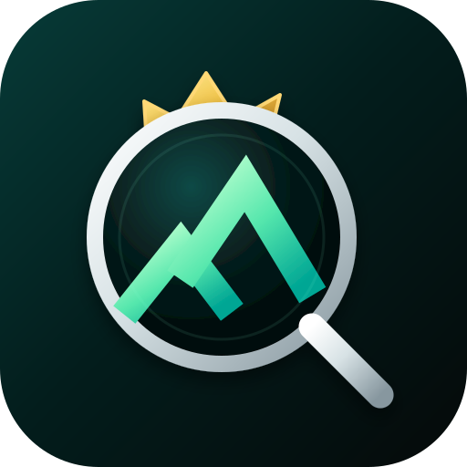

BRAND HUNTER
0.9 SAFE AUTOPILOT
AUTONOMOUS NAMING ENGINE
Автоматический охотник
Система сама генерирует имена, делает public screening, Deep Knockout и дополнительный Legal Risk Gate. Плановый запуск — каждые 4 часа.
SAFE MODE: в Telegram попадает только кандидат со статусом TECHNICAL PASS. Это строгий автоматический фильтр, но не юридическая гарантия. Перед регистрацией бренда нужен профессиональный trademark clearance.
Проверяю…
Загружаю состояние…
TELEGRAM ALERTS
Уведомления о кандидате
AUTOPILOT будет писать в Telegram только когда кандидат пройдёт Deep Knockout и Legal Risk Gate.
НЕ ПОДКЛЮЧЕНО
Открой бота и нажми START.
HISTORY
Последние циклы
Загрузка…
Тот же ручной Brand Hunter: Fresh Wave, Global Roots, Path Intelligence, Hall of Fame и Deep Knockout — теперь прямо здесь, во второй вкладке.